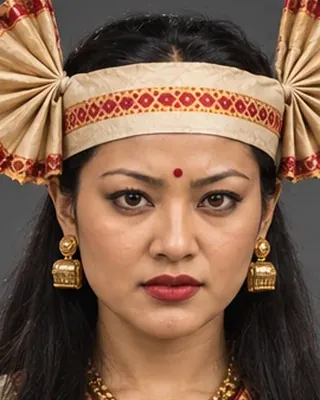

1768
কুৰংগনয়নী
married 1768; active to 1770 · Manipuri princess, queen of the Ahom kingdom

Married Rajeswar Singha in 1768 as thanks for Ahom help to her father. After his death she was taken by the rebel Ragha Moran and helped bring about his killing in April 1770; she later married Lakshmi Singha.
Record confidence: high.